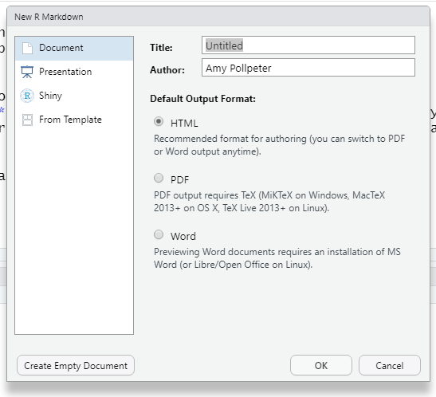
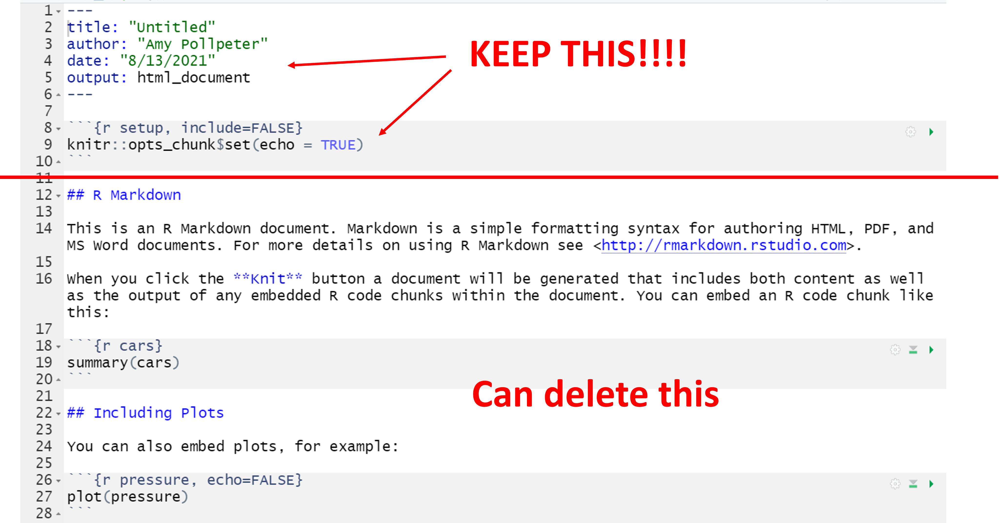
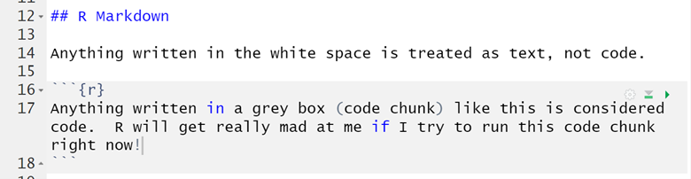
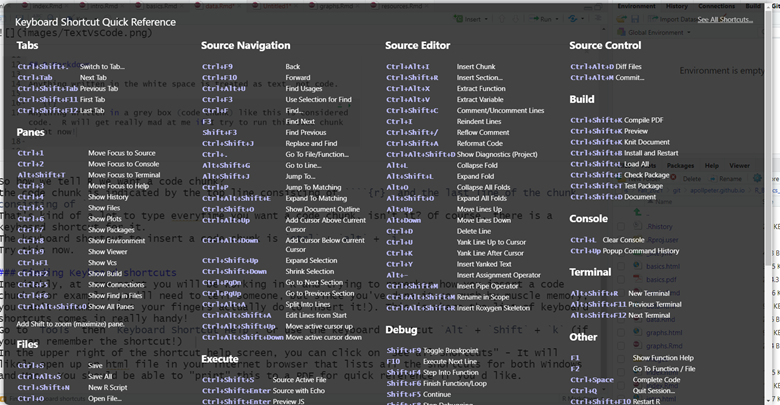
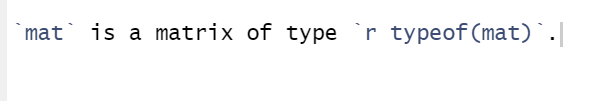

we are now going to switch from working in an R script file to working in an R Markdown file.
Open a new markdown file using File -> New File -> R Markdown
This will open up a dialogue box:

You can fill in a name for your file if you want (this doesn’t affect the name you save it as). For today, I suggest selecting HTML as the output type, Using PDF occaisionally takes downloading some other software but HTML will usually work. Then click OK.
You should now have a basic R Markdown file in panel 1.
It will contain some basic text. You can either hit return a few times and leave this information at the bottom of your file (for reference), or you can highlight and delete it.
 I usually start by saving this new file. Currently, it is not saved. The name you put in the dialogue window when creating it just populates the first line of the file, so you will see that even if you named your file, the file name on the tab says “Untitled” and is red with an * next to it. The red color and the * means there are unsaved changes in that file. I never walk away from my computer without making sure that none of the files in my R project are red!
Go to File and select Save As.
Ideally, you will want to save this file in the same folder that your project is in. R will automatically be in the same directory as the project when you open Save As.
As I mentioned before, R Markdown is a little different than R scripts in that you create “Chunks” of code, so you can separate different sections of the code in your file. I find that R Markdown makes it easier for me to provide good documentation of what I did (A very important concept that could be it’s own class!).

So how do we tell R we want a code chunk?
The code chunk is indicated by the top line consisting of three ticks marks followed by {r} and the last line of the chunk consisting of three tick marks.
That’s kind of a lot to type every time you want a code chunk, isn’t it? Of course, there is a keyboard shortcut for it.
The keyboard shortcut to insert a code chunk is ctrl + alt + i.
Try this now.
Inevitably, at some point you will be working in R and trying to remember how you insert a code chunk (for example, you’ll need to tell someone, but since you’ve done it so much by muscle memory, you can’t remember what your fingers actually do to insert it!). This is where the list of keyboard shortcuts comes in really handy!
Go to Tools then Keyboard Shortcut Help. Or use the keyboard shortcut Alt + Shift + k (if you can remember the shortcut!)

In the upper right of the shortcut help screen, you can click on “See all Shortcuts” - It will likely open up an html file in your internet browser that lists all the shortcuts for both Windows and Mac. You should be able to “print” this to a PDF for quick reference if you’d like. #### Press esc to exit the keyboard help screen.
In some cases, especially if writing a report (or a website) you may want to include an output from some R code in your text section. You can do that using by inserting a tick mark, followed by r and then your command, and then another tick mark.
For example you could include the type of our matrix, “mat” by typing r typeof(mat) with tick marks around it in your text. You won’t see the output while you are typing, but when you “knit” your file (convert) it to html, you will see the output in the result. Let’s try this.
Even though mat still exists in our Environment, we didn’t create it in this file, so when we try to knit the file, it will produce an error because it tries to create the file using only what is in this file. So let’s insert a chunk and recreate that matrix:
mat <- matrix(1:12, byrow=TRUE, nrow=3)
mat is a matrix of type integer.
If you remember back to why I like R, I mentioned that it is very versatile, and if there is something you want to do, there is probably a way to do it in R…
The way R is able to do all these different functions is by using packages. Generally, I have my first chunk in my markdown file be adding in the packages that I need. The first package you will want to install is tidyverse. -You will only need to install the package once - in all future projects, you will just need to load the package (see below).
#Install Packages
install.packages("tidyverse")Once a package is installed, you’ll need to load the package into your R file. this is done using the library command. Tidyverse is a great package for working with data.
library(tidyverse)## -- Attaching packages --------------------------------------- tidyverse 1.3.0 --## v ggplot2 3.3.3 v purrr 0.3.4
## v tibble 3.1.0 v dplyr 1.0.5
## v tidyr 1.1.3 v stringr 1.4.0
## v readr 1.4.0 v forcats 0.5.1## -- Conflicts ------------------------------------------ tidyverse_conflicts() --
## x dplyr::filter() masks stats::filter()
## x dplyr::lag() masks stats::lag()We are actually going to be using a dataset that in included with R, however, typically, you will need to first import data into your R file (we don’t need to do this because we are using data included with R).
If your data is in a delimited file, there are basic commands to import it.
For a tab delimited file or txt file, you can use read.table().
read.table() can be used with almost any type of data by adding an argument for the separator. It would look something like this.
dataname <- read.table(filepath/filename.csv, sep = ',')Because the .csv is such a common file type, there is a command for it:
dataname <- read.csv(filepath/filename.csv) #For data separated with a ','
dataname <- read.csv2(filepath/filename.csv) #For data separated by a ';'Keep in mind that when you import the data - your original data should always be treated as read.only. So once you start modifying it, rename it as a different dataframe. It is also very helpful to name it as something informative. You can do this using an underscore or a period followed by a descriptor: cars_woToyotas.
R has numerous data sets that come packaged with it for playing around with. To see a list of all the data sets that R comes with you can use the command data(). The two most commonly used in tutorials is mtcars and iris.
To be different, we are going to look at a data set involving the location of earthquakes near fiji. Try typing this into the console section of R markdown.
?quakesThis will bring up the information in your Help pane about this dataset.
Let’s look at the data:
quakes## lat long depth mag stations
## 1 -20.42 181.62 562 4.8 41
## 2 -20.62 181.03 650 4.2 15
## 3 -26.00 184.10 42 5.4 43
## 4 -17.97 181.66 626 4.1 19
## 5 -20.42 181.96 649 4.0 11
## 6 -19.68 184.31 195 4.0 12
## 7 -11.70 166.10 82 4.8 43
## 8 -28.11 181.93 194 4.4 15
## 9 -28.74 181.74 211 4.7 35
## 10 -17.47 179.59 622 4.3 19R has specifically made their datasets smaller to be worked with easier. Often times with your own data, you are not going to want to open the whole dataset at once. R uses similar commands as other languages such as Unix and Python, like head and tail.
head(quakes)## lat long depth mag stations
## 1 -20.42 181.62 562 4.8 41
## 2 -20.62 181.03 650 4.2 15
## 3 -26.00 184.10 42 5.4 43
## 4 -17.97 181.66 626 4.1 19
## 5 -20.42 181.96 649 4.0 11
## 6 -19.68 184.31 195 4.0 12tail(quakes)## lat long depth mag stations
## 995 -17.70 188.10 45 4.2 10
## 996 -25.93 179.54 470 4.4 22
## 997 -12.28 167.06 248 4.7 35
## 998 -20.13 184.20 244 4.5 34
## 999 -17.40 187.80 40 4.5 14
## 1000 -21.59 170.56 165 6.0 119The default number of lines shown by R is 6 lines, but you can include an argument to tell it how many lines you want it to show.
head(quakes, n=10)## lat long depth mag stations
## 1 -20.42 181.62 562 4.8 41
## 2 -20.62 181.03 650 4.2 15
## 3 -26.00 184.10 42 5.4 43
## 4 -17.97 181.66 626 4.1 19
## 5 -20.42 181.96 649 4.0 11
## 6 -19.68 184.31 195 4.0 12
## 7 -11.70 166.10 82 4.8 43
## 8 -28.11 181.93 194 4.4 15
## 9 -28.74 181.74 211 4.7 35
## 10 -17.47 179.59 622 4.3 19Another useful command to get a glimpse of the data is the summary command:
summary(quakes)## lat long depth mag
## Min. :-38.59 Min. :165.7 Min. : 40.0 Min. :4.00
## 1st Qu.:-23.47 1st Qu.:179.6 1st Qu.: 99.0 1st Qu.:4.30
## Median :-20.30 Median :181.4 Median :247.0 Median :4.60
## Mean :-20.64 Mean :179.5 Mean :311.4 Mean :4.62
## 3rd Qu.:-17.64 3rd Qu.:183.2 3rd Qu.:543.0 3rd Qu.:4.90
## Max. :-10.72 Max. :188.1 Max. :680.0 Max. :6.40
## stations
## Min. : 10.00
## 1st Qu.: 18.00
## Median : 27.00
## Mean : 33.42
## 3rd Qu.: 42.00
## Max. :132.00Lets learn some more about our data: How many rows does our data have?
nrow(quakes)How many columns does the data have?
ncol(quakes)We can also learn these numbers using the dim command:
dim(quakes)## [1] 1000 5Let’s practice some of our commands we learn in the R basics.
quakes[29,3]## [1] 582quakes[15,]## lat long depth mag stations
## 15 -20.7 169.92 139 6.1 94Now that we know a little about this data. What does the information tell us.
You can choose to subset your data to only look at a specific section of it. Let’s say we want to only look at earthquakes that occurred at a depth greater than 200 (km).
we can do this using a command from the tidyverse package: filter.
filtertakes the arguments of the data to subset and an argument of the values you are interested in.
quake_200 <- filter(quakes, depth > 200)
dim(quake_200)## [1] 582 5We can check that this command worked using the summary command.
summary(quake_200)## lat long depth mag
## Min. :-37.37 Min. :166.3 Min. :201.0 Min. :4.000
## 1st Qu.:-22.68 1st Qu.:180.1 1st Qu.:329.5 1st Qu.:4.200
## Median :-20.21 Median :181.2 Median :524.0 Median :4.500
## Mean :-20.50 Mean :180.1 Mean :466.3 Mean :4.537
## 3rd Qu.:-17.98 3rd Qu.:182.0 3rd Qu.:583.0 3rd Qu.:4.700
## Max. :-10.98 Max. :185.5 Max. :680.0 Max. :6.000
## stations
## Min. : 10.00
## 1st Qu.: 17.00
## Median : 25.00
## Mean : 31.82
## 3rd Qu.: 39.00
## Max. :132.00Looking at the minimum in the depth column shows us that this dataset no longer contains depths below 200.
We can also choose which columns of data we keep with the select. Let’s say we only interested in the latitude and longitude coordinates of the quakes.
select takes the argument of the data to subset, and the columns to keep.
quake_coord <- select(quakes, lat:long)
head(quake_coord)## lat long
## 1 -20.42 181.62
## 2 -20.62 181.03
## 3 -26.00 184.10
## 4 -17.97 181.66
## 5 -20.42 181.96
## 6 -19.68 184.31As you can see, this new dataset only contains the columns of “lat”, and “long”.
This works well if you have a fairly small dataset, or if you only want to keep a few columns. But what if you want to keep a majority of the columns. Select also works to remove columns by adding a -sign before the columns you want to remove.
quake_noCoor <- select(quakes, -lat, -long)
head(quake_noCoor)## depth mag stations
## 1 562 4.8 41
## 2 650 4.2 15
## 3 42 5.4 43
## 4 626 4.1 19
## 5 649 4.0 11
## 6 195 4.0 12You can even choose columns based on containing a specific character in the column name.
quake_2 <- select(quakes, contains("a"))
head(quake_2)## lat mag stations
## 1 -20.42 4.8 41
## 2 -20.62 4.2 15
## 3 -26.00 5.4 43
## 4 -17.97 4.1 19
## 5 -20.42 4.0 11
## 6 -19.68 4.0 12This selected only columns that contained an “a” in the name.
You can also use column numbers with the select command:
quake_3 <- select(quakes, 3:5)
head(quake_3)## depth mag stations
## 1 562 4.8 41
## 2 650 4.2 15
## 3 42 5.4 43
## 4 626 4.1 19
## 5 649 4.0 11
## 6 195 4.0 12Both filter and select can be used with more than one argument by using boolean operators: & (and), |(or), and ! (not).
quake_4 <- filter(quakes, depth > 200 & mag >4)
head(quake_4)## lat long depth mag stations
## 1 -20.42 181.62 562 4.8 41
## 2 -20.62 181.03 650 4.2 15
## 3 -17.97 181.66 626 4.1 19
## 4 -28.74 181.74 211 4.7 35
## 5 -17.47 179.59 622 4.3 19
## 6 -21.44 180.69 583 4.4 13It is likely that you are going to want to do multiple actions on your data. You can combine multiple functions, however this can get complicated and it can be easy to misplace a parenthesis or comma somewhere along the way.
This is where the ‘pipe’ comes in. It functions the same as it does in Unix, however it looks a little different. %>% You can type the three characters, or get used to using the keyboard shortcut: ctrl+shift+m.
filter(quakes, mag==4.0) %>%
select(lat:long) %>%
head()## lat long
## 1 -20.42 181.96
## 2 -19.68 184.31
## 3 -17.94 181.49
## 4 -23.55 180.80
## 5 -19.26 184.42
## 6 -22.06 180.60Not only are we less likely to make a mistake in the syntax with this, it is also much easier to read and proof.
If you’ve used excel for any type of data analysis, you have probably used the sort feature to organize the data alphabetically or numerically by a specific feature. In unix, this is the sort command, in R, this command is arrange.
Pull up the help topic on arrange. How would we use it to organize the data in order of the number of stations reporting the earthquakes?
What is the largest number of stations that reported a quake?
What is the largest number of stations that reported a quake?
Here I have wrapped the arrange command in the head command to minimize the amount of output. While in R studio it only prints a portion and says there are a number of remaining lines, in the html output, it would print all 1000!
head(arrange(quakes, stations))## lat long depth mag stations
## 1 -21.00 181.66 600 4.4 10
## 2 -23.55 180.80 349 4.0 10
## 3 -16.30 186.00 48 4.5 10
## 4 -20.10 184.40 186 4.2 10
## 5 -15.03 182.29 399 4.1 10
## 6 -19.06 169.01 158 4.4 10tail(arrange(quakes, stations))## lat long depth mag stations
## 995 -21.59 170.56 165 6.0 119
## 996 -20.25 184.75 107 5.6 121
## 997 -15.56 167.62 127 6.4 122
## 998 -15.33 186.75 48 5.7 123
## 999 -18.82 182.21 417 5.6 129
## 1000 -12.23 167.02 242 6.0 132we already saw that summary will give us the mean of each column, but what if we are really only interested in the mean depth of the quakes? we can get summary statistics on each of the columns:
mean(quakes$depth)## [1] 311.371It is also possible to get the means of all the columns, but not all the other information in the summary tables:
colMeans(quakes) #Make sure you capitalize the "M" in means## lat long depth mag stations
## -20.64275 179.46202 311.37100 4.62040 33.41800Here are some other summary statistics you can compute:
sd: Standard Deviation
var: Variance (sd^2)
-Note that both sd and var use n-1 as the denominator (The unbiased form of the sd for a normal distribution).
The mutate function lets us add new variables to a data object by specifying a formula. For instance, let’s say we want to create a column that shows the difference between the magnitude of an individual earthquake and the mean of the magnitudes.
# mutate takes the arguments of 1: The data we are working with, 2: The name of the new column, 3: The formula to get the new column.
quakes_diff <- mutate(quakes, DiffMean = mean(mag)-mag)
head(quakes_diff)## lat long depth mag stations DiffMean
## 1 -20.42 181.62 562 4.8 41 -0.1796
## 2 -20.62 181.03 650 4.2 15 0.4204
## 3 -26.00 184.10 42 5.4 43 -0.7796
## 4 -17.97 181.66 626 4.1 19 0.5204
## 5 -20.42 181.96 649 4.0 11 0.6204
## 6 -19.68 184.31 195 4.0 12 0.6204Note that R will always add this new column at the far right side of the data frame. If you want to reorder the columns, you can use the select function and list the columns in the order you want them in.
quakes_diff <- select(quakes_diff, 1:4,6,5)
head(quakes_diff)## lat long depth mag DiffMean stations
## 1 -20.42 181.62 562 4.8 -0.1796 41
## 2 -20.62 181.03 650 4.2 0.4204 15
## 3 -26.00 184.10 42 5.4 -0.7796 43
## 4 -17.97 181.66 626 4.1 0.5204 19
## 5 -20.42 181.96 649 4.0 0.6204 11
## 6 -19.68 184.31 195 4.0 0.6204 12What if we want to pare down the choices we have for depths. We want to classify each quake as occuring in a 100 meter range of depths? We can do this using a mutate to create a new column. We will also need another new command: ifelse - an if/then statement.
ifelse requires 3 arguments: 1) The condition to be tested - this needs to be a condition that can be answered as True or False, A DO step if the condition is TRUE and a DO step if the condition is False.
For this particular grouping, we are going to need several nested ifelse statements - which leads to a whole lot of parenthesis. As you type in the ifelse statements, everytime you place a left parenthesis, R will automatically print a right parenthesis, this can be very helpful in these types of functions. What you end up with is the code below.
quakes_diff1 <- mutate(quakes_diff, DepthCat = ifelse(depth > 0 & depth <=100, 100,ifelse(depth >100 & depth<=200,200,ifelse(depth>200 & depth<=300, 300,ifelse(depth>300 & depth<=400,400,ifelse(depth>400 & depth<=500,500,ifelse(depth>500 & depth<=600,600,700)))))))
head(quakes_diff1)## lat long depth mag DiffMean stations DepthCat
## 1 -20.42 181.62 562 4.8 -0.1796 41 600
## 2 -20.62 181.03 650 4.2 0.4204 15 700
## 3 -26.00 184.10 42 5.4 -0.7796 43 100
## 4 -17.97 181.66 626 4.1 0.5204 19 700
## 5 -20.42 181.96 649 4.0 0.6204 11 700
## 6 -19.68 184.31 195 4.0 0.6204 12 200What if I had used the %>% pipe command instead of an assignment operator. My code would have looked like this instead:
quakes_diff %>% mutate(DepthCat = ifelse(depth > 0 & depth <=100, 100,ifelse(depth >100 & depth<=200,200,ifelse(depth>200 & depth<=300, 300,ifelse(depth>300 & depth<=400,400,ifelse(depth>400 & depth<=500,500,ifelse(depth>500 & depth<=600,600,700)))))))
head(quakes_diff)Would this have worked?
What if I had used the %>% pipe command instead of an assignment operator. My code would have looked like this instead:
quakes_diff %>% mutate(DepthCat = ifelse(depth > 0 & depth <=100, 100,ifelse(depth >100 & depth<=200,200,ifelse(depth>200 & depth<=300, 300,ifelse(depth>300 & depth<=400,400,ifelse(depth>400 & depth<=500,500,ifelse(depth>500 & depth<=600,600,700)))))))
head(quakes_diff)Would this have worked?
A hint: This code actually produces two separate outputs. One output has dimensions of 1000 rows by 7 columns, the other looks like this:
## lat long depth mag DiffMean stations
## 1 -20.42 181.62 562 4.8 -0.1796 41
## 2 -20.62 181.03 650 4.2 0.4204 15
## 3 -26.00 184.10 42 5.4 -0.7796 43
## 4 -17.97 181.66 626 4.1 0.5204 19
## 5 -20.42 181.96 649 4.0 0.6204 11
## 6 -19.68 184.31 195 4.0 0.6204 12What did this code do that was different than our original code?
Now that we have our depth data categorized into 7 categories, what if we want to know some general statistics about the quakes that occurred in each depth category? For instance - let’s say we want to know the mean magnitude for quakes at each depth category. We could use filter piped to mean.
filter(quakes_diff1, DepthCat == 100)$mag %>% mean()## [1] 4.786719This would work, but we’d have to repeat the same code for every depth category. And that’s kind of annoying! In addition, with large datasets, you may not know all the levels of the variables you are looking at. The group_by and summarise commands from tidyverse alleviate this issue. These commands allow you to specify the variables you want to group by with the group_by command (in our case, DepthCat) and then use summarise to get some summary statistics.
So if we want to know the mean magnituge of the earthquakes at each depth category, we can use the following code:
quakes_diff1 %>%
group_by(DepthCat) %>%
summarise(meanMag = mean(mag))## # A tibble: 7 x 2
## DepthCat meanMag
## <dbl> <dbl>
## 1 100 4.79
## 2 200 4.66
## 3 300 4.57
## 4 400 4.41
## 5 500 4.52
## 6 600 4.55
## 7 700 4.55Can you write code to determine the mean number of stations that reported quakes for each depth category?
If we didn’t create a depth category, how many different depths are represented in the table? Write code to determine the mean magnitude of earthquakes at each of these different depths.
Can you write code to determine the mean number of stations that reported quakes for each depth category?
quakes_diff1 %>%
group_by(DepthCat) %>%
summarise(meanMag = mean(stations))## # A tibble: 7 x 2
## DepthCat meanMag
## <dbl> <dbl>
## 1 100 37
## 2 200 33.5
## 3 300 32.3
## 4 400 24.8
## 5 500 32.0
## 6 600 32.5
## 7 700 33.5If we didn’t create a depth category, how many different depths are represented in the table? Write code to determine the mean magnitude of earthquakes at each of these different depths.
depths <- quakes_diff1 %>%
group_by(depth) %>%
summarise(meanMag = mean(mag))
dim(depths)## [1] 422 2head(depths)## # A tibble: 6 x 2
## depth meanMag
## <int> <dbl>
## 1 40 4.92
## 2 41 4.88
## 3 42 4.9
## 4 43 4.94
## 5 44 4.9
## 6 45 4.61